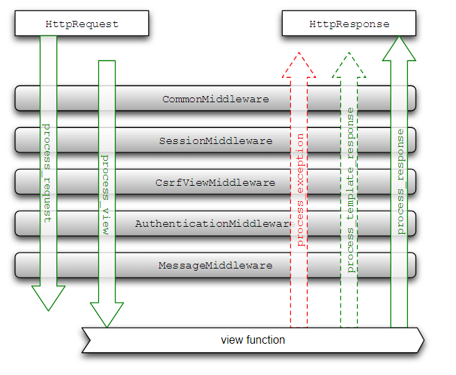

Django form、ModelForm、表单验证
forms.py
#coding:utf-8
from django import forms
from models import Info
from django.core.exceptions import ValidationError
def valide_name(value):
try:
Info.objects.get(name=value)
print 'exexeexexeexe'
raise ValidationError('key exist')
except Info.DoesNotExist:
pass
class InfoForm(forms.Form):
name = forms.CharField(max_length=100,label='姓名',error_messages={'required':'此项必填'})
address = forms.CharField(max_length=100)
city = forms.CharField(max_length=100)
class InfoForm1(forms.ModelForm):
#name = forms.CharField(label=u'名称',validators=[valide_name])
def clean_name(self):
try:
value = self.cleaned_data.get('name')
Info.objects.get(name=value)
print 'exexeexexeexe'
raise ValidationError('key exist')
except Info.DoesNotExist:
pass
return value
def clean(self):
cleandata = super(InfoForm1,self).clean()
print cleandata
value = cleandata['name']
try:
Info.objects.get(name=value)
#self._errors['name'] = self.error_class(["%s的信息已存在" % value])
print 'exexeexexeexe'
raise ValidationError('key exist')
except Info.DoesNotExist:
pass
return cleandata
class Meta:
model = Info
fields = ("name","city")
# exclude = ("")
#表单验证 3种
'''
1.表单字段验证器
2.clean_filedname 验证字段，针对摸个字段验证 函数名必须叫clean_filedname，函数内部对后台数据做了提取验证，并返回自定义的错误信息。
3.表单clean方法，针对整个表单
'''
views.py
# -*- coding: utf-8 -*-
from __future__ import unicode_literals
from django.shortcuts import render
from django.http import HttpResponse
# Create your views here.
from models import Info
from forms import InfoForm,InfoForm1
from django.shortcuts import render
def index(request):
return HttpResponse('hello world')
#not use django form
def insert01(request):
print request.method
if request.method == 'POST':
name1 = request.POST['name']
print name1
address = request.POST['address']
city = request.POST['city']
info = Info.objects.create(name=name1,address=address,city=city)
print info
return HttpResponse('data saved')
return render(request,'index.html',locals())
#use django form
def insert(request):
if request.method == 'POST':
# name1 = request.POST['name']
# print name1
# address = request.POST['address']
# city = request.POST['city']
#
# info = Info.objects.create(name=name1, address=address, city=city)
# print info
# return HttpResponse('data saved')
####################################################################
# Info_form = InfoForm(request.POST)
# if Info_form.is_valid():
# Info.objects.create(
# name = Info_form.cleaned_data['name'],
# address = Info_form.cleaned_data['address'],
# city = Info_form.cleaned_data['city'],
# )
# return HttpResponse('django form data saved')
################################################################
inForm = InfoForm1(request.POST)
if inForm.is_valid():
inForm.save()
return HttpResponse('data saved')
Info_form = InfoForm1()
return render(request, 'index.html', locals())
<form method='post'>
{% csrf_token %}
{{ form }}
<input type="submit" value="提交">
</form>
Django 上下文渲染器
上下文渲染器 其实就是函数返回字典，字典的 keys 可以用在模板中
def ip_address(request):
return {'ip_address': request.META['REMOTE_ADDR']}
TEMPLATES = [
{...
...
'OPTIONS': {
'context_processors': [
'django.template.context_processors.debug',
'django.template.context_processors.request',
'django.contrib.auth.context_processors.auth',
'django.contrib.messages.context_processors.messages',
#新建一个 context_processor.py
'xxx.context_processor.settings',
'xxx.context_processor.ip_address',
],
},
},
]
#coding:utf-8
#nav_process.py
from .models import Column
nav_display_columns = Column.objects.filter(nav_display=True)
def nav_column(request):
return {'nav_display_columns':nav_display_columns}
Django 中间件
每一个请求都是先通过中间件中的 process_request 函数，这个函数返回 None 或者 HttpResponse 对象，如果返回前者，继续处理其它中间件，如果返回一个 HttpResponse，就处理中止，返回到网页上
process_request
process_response
process_view
process_exception
process_template_response
方法1：
class MyMiddleware(object):
def __init__(self, get_response):
self.get_response = get_response
def __call__(self, request):
# 调用 view 之前的代码
response = self.get_response(request)
# 调用 view 之后的代码
return response
__call__ 方法会先调用 self.process_request(request)，接着执行 self.get_response(request) 然后调用 self.process_response(request, response)
方法2：
def mymiddleware(get_response):
def middleware(request):
print 'this is my middle ware....'
response = get_response(request)
print 'this is my middleware response....'
return response
return middleware